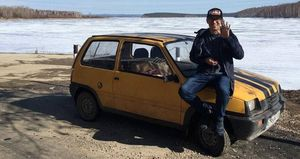

Контакты
Уроки JavaScript
Байкал#Иркутск
Всем добрый день! Меня зовут Илья Домышев и я из Иркутска. Иркутск город с более чем трёхсотлетней историей, о своём городе
я пишу здесь.
То, чем я увлекаюсь - это программирование, медитация, философия, зарядка, уборка нашего города, мастерство.
Обо всём этом -
здесь
.
Как вы поняли, мне есть чем заняться в жизни и я не скучаю.
А вот несколько моих статей, тему выбирайте сами:
Почему я люблю программировать?
Какой опыт я получил в конструировании машин?
Почему я люблю Иркутск и почему я его выбираю? Почему я вернулся из Москвы?